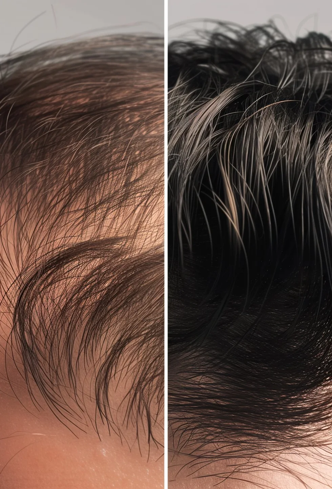

E se a queda parasse agora?
Avaliação médica online, fórmula manipulada e kit de 4 meses em casa.
img/fotos/hero-mob.webp · 1104 × 680 px

O boné esconde. A queda continua.
Entradas e coroa costumam avançar aos poucos. Veja a diferença entre esperar e começar agora.
| Situação | Sem tratamento | Com Elevamed |
|---|---|---|
| Queda de fios | Tende a aumentar | Tende a diminuir |
| Folículos ativos | Afinam e atrofiam | Mais protegidos |
| Novos fios | Não voltam | Podem surgir a partir do 3º mês |
| Chance de recuperar | Cai a cada mês | Maior quanto antes começar |
Resultados variam de pessoa para pessoa. Tratamento sempre a critério médico.
Quem começou cedo conta como foi


Os resultados são individuais e podem variar de pessoa para pessoa.
Simples, discreto e online
Você responde um questionário de saúde em menos de 5 minutos, sem sair de casa.
Cabelo não cresce da noite para o dia. Veja o caminho real.

Nada visível ainda, e tudo bem. O tratamento já age por dentro. Pode haver uma queda temporária: é o ciclo do fio se reorganizando.
Três caminhos. Um cuida de tudo.
Enquanto o folículo está vivo, há o que fazer.
O hormônio DHT afina os fios até eles pararem de crescer. Enquanto o folículo está vivo, dá para frear o processo.
Quanto mais cedo, mais folículos podem ser salvos.
[Referências científicas que o médico responsável validar]
Quatro meses, porque é quando o resultado aparece
Ficou alguma dúvida?
Em quanto tempo vejo resultado?
Cada organismo responde de um jeito. Em geral, o resultado aparece entre o 3º e o 4º mês, por isso o kit tem 4 meses. Os resultados variam e dependem de constância, sempre com acompanhamento médico.
Como funciona a avaliação médica?
Você responde um questionário e envia fotos. Um médico analisa e, se for o caso, prescreve. Tudo online, sem videochamada, a critério médico.
O tratamento é seguro?
Cada caso é avaliado individualmente antes de qualquer prescrição, e a medicação vem de farmácias que seguem as normas da Anvisa.
Quando eu pago?
Só depois da aprovação médica. Ao fim do questionário você cadastra o cartão, e a cobrança acontece apenas se o médico indicar o tratamento.
Posso cancelar?
Sim, antes do envio. Como a fórmula é manipulada para você, o cancelamento precisa acontecer antes de o pedido sair. Avisamos quando o envio estiver próximo.
A embalagem é discreta?
Sim. A caixa não identifica o conteúdo nem a marca por fora.
E se não funcionar para mim?
A equipe acompanha sua evolução. Sem resultado, o médico pode ajustar a fórmula ou indicar outra abordagem.
 Segurança e transparência em primeiro lugar
Segurança e transparência em primeiro lugar
A Elevamed não é uma farmácia. Quando prescritos, os medicamentos são manipulados por farmácias credenciadas, de acordo com as normas da Anvisa, e prescritos por médicos independentes.
Conheça as farmácias credenciadas →Cada dia é um folículo a menos.
A avaliação leva cerca de 5 minutos.
Começar minha avaliação